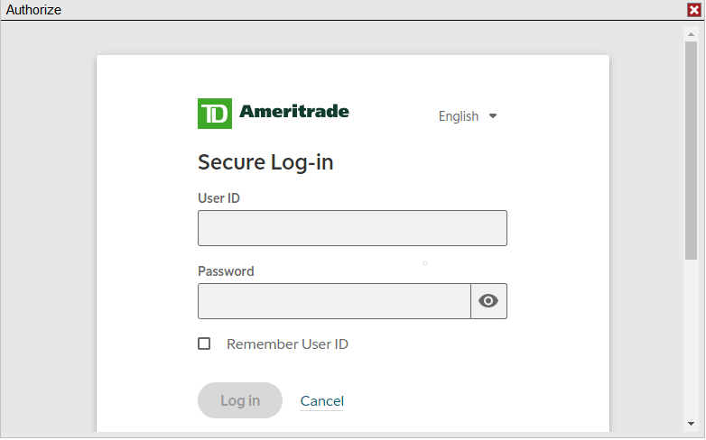
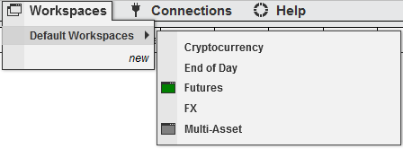
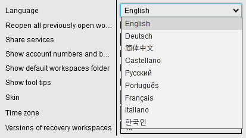

|
<< Click to Display Table of Contents >> 8.0.26.1 |


|
8.0.26.1
|
<< Click to Display Table of Contents >> 8.0.26.1 |
|
8.0.26.1 Release Date
June 22th, 2022
Features |
NinjaTrader Watch icon added Feature #15285
In the top right corner of the Control Center a watch icon was added to connect more directly with our daily live events. When events are streamed live, this will be indicated via green coloring. |
Issue # |
Status |
Category |
Comments |
15267 |
Fixed |
Drawing |
Drawing objects removed with RemoveDrawObject() could remain in the Drawing Objects list until object is redrawn |
15249 |
Fixed |
NinjaScript |
Trendlines indicator could display message after disconnect/reconnect that was targeted only for Strategy Analyzer |
15294 |
Added |
Rithmic |
Added Apex connect points |
15264 |
Fixed |
Rithmic |
Out of sequence position updates could occur |
15271 |
Fixed |
Workspaces |
Unexpected behavior deleting _Workspaces.xml file |
15298 |
Fixed |
Workspaces, Strategy |
Strategies would not be shown in new workspace unless Strategies tab was duplicated |
8.0.26.0 Release Date
April 27, 2022
Features |
Support FairX Exchange Feature #15190
Support for the FairX Exchange was added, available products are TEC, LTEC, B5, LB5 and OIL.
|
TDA login authorization over WebView2 TDA Adapter Feature #15072
TDA users can now login and authorize their accounts over WebView2, this includes Windows 11 users.

|
Default workspaces are now accessible in own subfolder Control Center Workspaces menu Workspaces Feature # 15104
With Tools > Options > General > Preferences > Show Default Workspaces folder checked, the default workspaces shipped with NinjaTrader Desktop will always be accessible in a dedicated folder under Workspaces.
 |
Language menu improved to show new target language non translated Control Center Feature # 15181
When switching NinjaTrader Desktop to a new language, the new target language is now non-translated making it more intuitive to select.
 |
Korean language support added (Beta) Localization Feature # 15044
Support for Korean was added, please report any improvement suggestions via [email protected] |
Issue # |
Status |
Category |
Comments |
15053 |
Fixed |
Adapter, Coinbase |
ADAUSD is Missing historical data, throws Cast Error when opening Historical Data Manager |
14826 |
Fixed |
Adapter, CQG |
CQG WebApi with Sim License Key: " Order Received order for unknown account" '16984730' |
15047 |
Fixed |
Adapter, cTrader |
Modifying working order in cTrader is not reflected in NT |
15121 |
Fixed |
Adapter, Forex.com |
Close Operation could time out with large number of orders |
14953 |
Fixed |
Adapter, FXCM |
MIT orders could be cancelled after connection loss and reconnect on FXCM Demos only |
14954 |
Fixed |
Adapter, FXCM |
Market Data mapping issue when Trading CFDs with FXCM in UK Time Zone |
15160 |
Fixed |
Adapter, Gain |
Gain CFD resolution could be failing due to backend changes |
15049 |
Fixed |
Adapter, Interactive Brokers |
NinjaTrader would not update position on IB Liquidation |
15063 |
Fixed |
Adapter, Interactive Brokers |
Interactive Brokers Auto Logon has issues when the password contains certain non-alphanumeric characters |
15101 |
Fixed |
Adapter, Interactive Brokers |
Interactive Brokers CZK denominations do not show in platform |
15109 |
Fixed |
Adapter, Interactive Brokers |
Interactive Brokers: Auto Logon will not populate credentials in Gateway 981.3g |
15048 |
Added |
Adapter, Rithmic |
Updated Rithmic API to version 11.3.0.0 |
14981 |
Changed |
Adapter, TD Ameritrade |
User who is able to place short entries through TDA (TOS) cannot in NinjaTrader |
14923 |
Fixed |
Adapter, TD Ameritrade |
Every tick reported as daily candle with Hong Kong SAR regional settings |
15178 |
Fixed |
Alerts |
Alert always triggers when opening Workspace, if alert is applied to background chart tab |
14658 |
Fixed |
ATI |
Moving OIF files to incoming folder results in no action |
15040 |
Fixed |
ATM Strategies |
Hovering over ATM Strategy Info would not reflect modification |
15042 |
Fixed |
ATM Strategies |
Reversal Order is affected by 'Chase' option and may cause multiple ATM entries |
14813 |
Fixed |
ATM Strategies, Order Entry |
Order entry windows would not show working ATM's if custom ATM was selected then canceled |
15076 |
Fixed |
Backup & Restore |
Backup could fail if the backup folder is set to a mobile drive's root directory |
14999 |
Fixed |
Chart |
Time and Date Entries in the Mini Data Box could be duplicated |
15006 |
Fixed |
Chart |
Chart would not relocate properly using Windows + Shift + Cursor |
14951 |
Fixed |
Chart |
White grid lines show incorrect color with Dark Skin applied. |
14983 |
Fixed |
Chart |
Chart stuck 'loading' when chart tab is switched prior to historical reload completion |
15148 |
Fixed |
Chart |
Unable to change instruments in multiple panel charts |
15195 |
Fixed |
Chart |
NullReferenceException in rendering when running strategy |
14942 |
Fixed |
Chart, Bars |
Weekly, monthly and yearly charts didn't respect trading hours definition on intraday realtime/playback data |
14864 |
Fixed |
Chart, Drawing |
Extended Lines and Rays on non-equidistant charts will 'slide' over the chart when scrolling past today |
15179 |
Fixed |
Chart, Drawing Tool, NinjaScript |
Polygon and Path Draw Objects could disappear on reloading NinjaScript |
14988 |
Fixed |
Chart, NinjaScript |
A strategy ZOrder property is 0 by default, when the default should be 10001 |
15153 |
Fixed |
Chart, NinjaScript |
Andrew's Pitchfork disappears when anchors are out of view |
14936 |
Fixed |
Chart, NinjaScript |
Setting plot values to double.MinValue on some visible bars causes d2d error |
15184 |
Fixed |
Chart, NinjaScript |
COT indicator updated mappings |
14840 |
Fixed |
Chart, Strategy |
Strategy with AddChartIndicator, puts indicator on wrong panel when changing instruments |
15106 |
Fixed |
Chart, SuperDOM |
SuperDOM/Charts could become unresponsive when duplicating SuperDOM |
15170 |
Fixed |
Connections, FXCM |
Configuring FXCM connection while platform language is Portuguese could result in error |
15073 |
Added |
Control Center |
Direct video guides link in Help menu |
14995 |
Fixed |
Control Center |
Window maximized on a non-primary screen will incorrectly expand onto an additional screen |
15124 |
Changed |
Control Center |
Improved error messaging on attempting to Import Non-NT8 zip file |
15127 |
Fixed |
Control Center |
Orders Tab Filter by Instrument would not uncheck |
15168 |
Fixed |
Control Center |
Orders Tab Filter prevents any orders shown on restart |
15177 |
Added |
Control Center |
Help menu link to live events |
14937 |
Fixed |
Control Center |
Minimizing modal forms could cause undesirable behavior |
14959 |
Fixed |
Control Center |
Tab key does not switch between 'Max Order Size' and 'Max Position Size' |
15097 |
Fixed |
Core |
Print orientation default should be Landscape |
14935 |
Fixed |
Database, Instruments |
Changing Instrument Properties of instrument applied to chart causes NT to become unresponsive |
15173 |
Fixed |
DrawingTool |
Global Drawing Objects could be duplicated when using the 'Save As' to save a workspace |
15103 |
Fixed |
DrawingTool |
Reload NinjaScript can temporarily hide drawing objects attached to "all charts" |
15089 |
Added |
Installer |
Safe mode entry made available to Start menu |
14934 |
Fixed |
Instruments |
Typing ^ or @, into chart, correctly selects list but excludes those instruments |
15207 |
Fixed |
Instruments |
Instrument Selector Displays placeholder after deleting instrument from list |
14903 |
Fixed |
Localization |
IBKR and BarChart adapters report incorrect historical data and executions if Windows number format is non-default |
15167 |
Fixed |
Market Analyzer |
Unhandled exception when removing Blank rows in Market Analyzer |
15183 |
Fixed |
Market Analyzer |
Market Analyzer would not add previously added master instrument |
15079 |
Changed |
NinjaScript |
Remove Requirement for all VS's needing to be closed, to launch VS from NT |
14972 |
Fixed |
NinjaScript |
Unmanaged Orders on primary Series Canceled, Secondary are not, on start up Multi Time Frame |
14998 |
Fixed |
NinjaScript |
TimeEditorKey uses Text editing cursor when mouse over arrow buttons |
15000 |
Fixed |
NinjaScript |
Path and Polygon drawing tools could have error after recompile/reload |
15002 |
Fixed |
NinjaScript |
Volume Up Down indicator would not display when Language is set to Italian |
15016 |
Fixed |
NinjaScript |
When StopCancelClose takes place, call the order "StopCancelClose" |
15045 |
Fixed |
NinjaScript |
Strategy with 1 tick added series could cancel stoploss when Tick Replay is used in Strategy Analyzer |
15058 |
Fixed |
NinjaScript |
No .cs file is generated in the StrategyAnalyzerLogs folder when backtesting a strategy in a subfolder |
15060 |
Fixed |
NinjaScript |
Error exporting strategy that includes indicator in sub-folder/sub-namespace cannot export |
15080 |
Fixed |
NinjaScript |
Strategy using Collection Editor cannot be reloaded after recompiling |
15081 |
Changed |
NinjaScript |
Managed Approach Internal Handling Rules log reporting improved |
15117 |
Fixed |
NinjaScript |
COT indicator not plotting new week's data after holiday/New Year |
15157 |
Fixed |
NinjaScript |
TrendLines indicator throws error in OnCalculateMinMax when viewed in Strategy Analyzer chart |
14882 |
Fixed |
NinjaScript |
AddOn that adds an image to ControlCenter crashes on second import |
15038 |
Fixed |
NinjaScript |
@Pivots.cs causes invalid index error on blank chart |
15046 |
Fixed |
NinjaScript |
Tick counter shows repeating decimals when shown as a percentage |
15050 |
Fixed |
NinjaScript |
Backups with large paths can be created, but cannot be restored |
15055 |
Fixed |
NinjaScript |
MA Envelopes indicator generates error when Period is set to 1 |
15064 |
Fixed |
NinjaScript |
Bar Timer does not work with Visibility check box as expected. |
14977 |
Fixed |
NinjaScript Editor |
NinjaScript editor unsaved changes message box on exit could not be getting proper focus |
15107 |
Changed |
NinjaScript Editor |
There is an "Exclude from Compilation" button in the NinjaScript Editor's subfolders that does no operation |
15108 |
Fixed |
NinjaScript Editor |
NinjaScript Editor throws an error message regarding code that is commented out |
14900 |
Fixed |
NinjaScript Editor |
Moving script with enum to new folder throws object reference not set to instance of object error |
15119 |
Fixed |
NinjaScript Editor, Visual Studio Integration |
Editor could fail to find Visual Studio 2022 installation |
14869 |
Fixed |
NinjaScript, DrawingTool |
Regression Channel with either Extend Left or Extend Right selected could disappear from chart if end points are outside of the viewable chart window |
15033 |
Fixed |
NinjaScript, Strategy |
Strategy instace could be missing from strategies tab but applied on chart |
15128 |
Fixed |
NinjaScript, Strategy |
Changing indicator panels while using AddChartIndicator could behave differently when enabled from a Chart vs. Control Center |
14883 |
Fixed |
NinjaScript, Strategy |
Wait until flat not consistently submitting working historical orders that reach real-time |
15174 |
Fixed |
NinjaScript, Strategy |
Issues enabling AdoptAccountPositionAware strategies |
15034 |
Fixed |
NinjaScript, Strategy Analyzer |
Browsable / NinjaScriptProperty Attributes could throw error in SA Optimization |
15186 |
Fixed |
NinjaScript, Strategy Analyzer |
Strategy Analyzer view model could have issue accessing indicator found in two obfuscated assemblies |
15096 |
Fixed |
Order Entry |
Position Close algorithm could be triggered than once on same position |
15067 |
Fixed |
Order Flow + |
OrderFlow Cumulative Delta indicator could have incorrect values when applied to 5 day chart |
15056 |
Fixed |
Order Flow + |
OrderFlow Volume Profile set to Price causes charting freeze when zooming in |
15069 |
Fixed |
Playback |
Market replay data replays slow on maximum speed since 10-18-2021 |
15068 |
Fixed |
Playback, Strategy Analyzer |
Strategy Analyzer 'Run' should be disabled in Playback mode |
15043 |
Changed |
Strategy |
StopTargetHandling default should .PerEntryExecution |
15099 |
Fixed |
Strategy Analyzer |
Strategy Analyzer 'Optimize On' property changes when changing strategies |
14891 |
Fixed |
Strategy Analyzer |
Include Commission and Default Quantity do not persist in Strategy Analyzer after WS reopen |
14962 |
Fixed |
Strategy Analyzer |
Strategy Analyzer does not use default template and preset using Open in New Strategy Analyzer from Log grid |
15111 |
Fixed |
Strategy Analyzer |
A strategy that adds indicators that draw objects to the chart is throwing a NullReferenceException in the strategy analyzer. |
15125 |
Added |
Strategy Builder |
IsFirstTickOfBar added to Strategy Builder |
15165 |
Fixed |
Strategy Builder |
Strategy Builder could be unable to repopulate saved To / Subject fields from a share service |
14816 |
Fixed |
Strategy Builder |
Strategy Builder: Changing an input then clicking Cancel, does not cancel change |
14912 |
Fixed |
Strategy Builder |
Passing a secondary series to MACD in the strategy builder results in bars ago error |
14990 |
Fixed |
Strategy Builder |
Strategy Builder could throw an error when opening a Condition Builder with platform in Italian |
15113 |
Fixed |
Strategy Builder |
Strategy Builder Trailing Stop(s) can select irrelevant calculation modes of Price and Currency. |
15075 |
Fixed |
Strategy, Kinetick |
Unable to connect to Kinetick with strategies on strategies tab |
15150 |
Fixed |
Trading Hours |
Trading Hours holiday segment duplicate holidays reporting improved |
14782 |
Fixed |
UI |
On certain setups indicator selector starts in wrong position |
15149 |
Fixed |
Workspaces |
After switching to a workspace using the Alert Log, Shift-F3 causes both workspaces to appear as one |